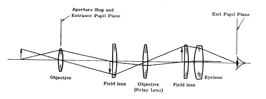

image
Introduction to optics and optical systems. An integrated lab and lecture course that covers the basic principles of electromagnetic radiation, optical materials, ray tracing and basic imaging systems and components. Coverage includes: mirrors, lenses, Fresnel lenses, diffraction gratings, polarization mechanisms, lasers, holograms, optical fibers, telescope designs, and projectors.
Course Info
- Summer 2008: 3 credit hours. CRN 31756
- Mondays, Tuesdays, Wednesdays, & Thursdays, 8:00 - 9:35 am, Tortolita E106, West Campus, Pima Community College
- Syllabus
Instructor Info
- Instructor: Anthony Tanbakuchi
- Office: Radiology Research Labs, U of A, (520) 626-4500
- Easiest to contact me via email: tec042@tanbakuchi.com
Videos
- Example of Pepper's ghost effect:
- The haunted mansion at disney land uses the effect for the ball room and many other scenes. Scroll down to the video with the caption "Look at the Grand Hall with the lights on in this quick video clip." video Read more about the effect on this page.
- Examples of aliasing
- Helicopter blades that "appear" to be stationary. video "Rubber" helicopter blades due to reading out the image from bottom to top. video
Course Calendar
ALL MATERIAL DUE AT THE BEGINNING OF CLASS
May
- May 27 (Week 1)
- Orientation, Introduction & Safety
- May 28
- Handout 1 Lab 1 – Handling Optical Elements
- May 29
- Handout 2 - Lab 1 Due Lab 2 – Plane Mirror
- May 30
- Company Tour
June
- June 2 (Week 2)
- Handout 3 Lab 2 Due (delayed) Lab 3 – Flexible Mirror
- June 3
- Handout 4 HW 1 Due, Lab 2 Due, Lab 3 Due Lab 4 – Spherical Mirror
- June 4
- Handout 5 Lab 5 – Total Internal Reflection
- June 5
- Handout 6 QUIZ 1
- June 6
- Company Tour
- June 9 (Week 3)
- Handout 7 HW 2 Due Lab 4 Due Lab 6 – Optical Fibers
- June 10
- Handout 8 Lab 7 – Polaroid Sheets
- June 11
- Handout 9 QUIZ 2 Lab 5 Due
- June 12
- Handout 10 Lab 6 Due HW 3 Due Lab 8 – Polarization by Reflection
- June 13
- Company Tour
- June 16 (Week 4)
- Handout 11 Lab 7 Due Lab 9 – Thin Convex Lenses
- June 17
- Handout 12 HW 4 Due Lab 10 – Thin Concave Lenses
- June 18
- Handout 13 QUIZ 3 Lab 8 Due
- June 19
- Handout 14 HW 5 Due , Lab 9 Due Lab 11 – The Fresnel Lens
- June 20
- Company Tour
- June 23 (Week 5)
- Handout 15 Lab 10 Due Lab 12 –The Magnifying Glass
- June 24
- Handout 16 HW 6 Due Lab 13 – The Slide Projector
- June 25
- Handout 17 Lab 11 Due Lab 14 – The Keplerian Telescope
- June 26
- Handout 18 HW 7 Due, Lab 12 Due QUIZ 4
- June 27
- Company Tour
- June 30 (Week 6)
- Handout 19 Lab 13 Due Lab 15 – The Galilean Telescope
July
- July 1
- Handout 20 HW 8 Due, Lab 14 Due Lab 16 – The Hologram
- July 2
- Handout 21 Lab 15 Due Lab 17 – The Diffraction Grating
- July 3
- Handout 22 QUIZ 5 HW 9 Due
- July 4
- No Class
- July 7 (Week 7)
- Handout 23 Lab 16 Due Lab 18 – Viewing Spectral Lines
- July 8
- Handout 24 HW 10 Due, Lab 17 Due
- July 9
- Review Lab 18 Due
- July 10
- Final Exam